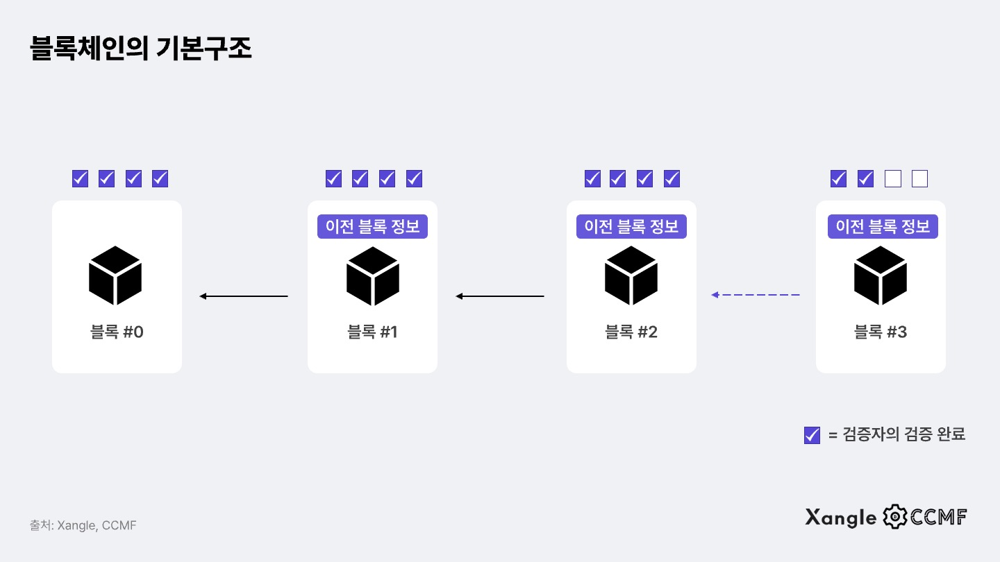

아래 캔버스에서 블록을 클릭하면 블록의 정보를 확인할 수 있습니다.
블록체인은 여러 개의 블록이 연결되어 형성된 체인입니다.
각 블록은 데이터와 해시값을 포함하고 있습니다.
블록은 다음과 같은 구조로 이루어져 있습니다:
블록체인은 분산된 네트워크에서 데이터의 무결성을 보장합니다.
각 블록은 이전 블록의 해시값을 포함하여 연결됩니다. 체인의 모든 블록은
서로 연결되어 있어, 하나의 블록이 변경되면 전체 체인이 영향을 받습니다.
체인의 방향을 거슬러서 블록을 변경할 수 없기에 데이터의 무결성을
보장합니다.
블록체인은 중앙 집중식 시스템과 달리, 모든 참여자가 동일한 데이터를 공유합니다.
이로 인해 데이터의 위변조가 어렵고, 신뢰성을 높일 수 있습니다.